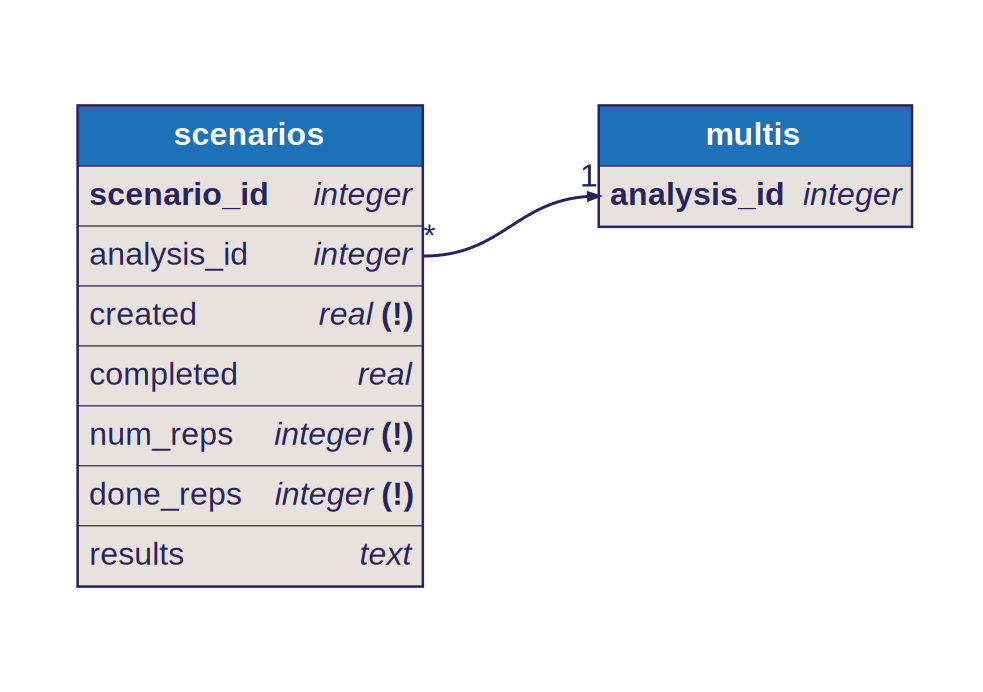

Program Architecture
This project implements digital tools for Cambridge University Hospitals NHS Trust.
Docker services
The digital hospitals server is implemented as a set of Docker containers:
docs: Serves this documentation website. Based on the
httpd:alpineDocker image.redis: Provides a redis service for the RQ job queue. Based on the
redis:alpineDocker image.redis-worker: Runs simulation jobs from the job queue.
backend: RESTful server for submitting simulation jobs and viewing their status/results.
frontend: React.js based frontend server for accessing the sensors and histopathology simulation dashboards. (GitHub link)
{kind=link}
The relationship between the Docker services is shown above. Each service in the figure depends on the services above. The dashed line denotes that the frontend depends on the “server” service but will still launch without a running backend server (albeit without the relevant functionalities).
TODO: add sensor server to the docker bundle.
Database structure
Scenario results and simulation statuses are stored in a SQLite database with the following schema:
{kind=link}
In the above DBML diagram, the primary keys of each table are shown in bold text and are set to
AUTOINCREMENT. The (!) marker represents NOT NULL. The created and completed
fields are UNIX timestamps, while the results field is a JSON string.